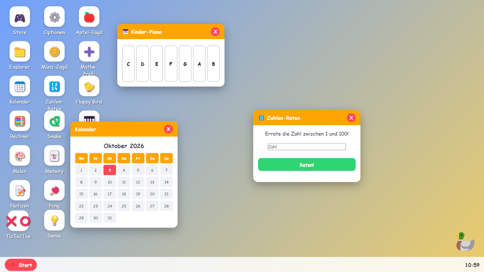

TGRAFSoft
Home Über uns ImpressumHier finden Sie die neuesten Informationen zu unseren Produkten.

Wie sie vieleicht schon wissen, ist KidsOS 26 nun verfügbar!
KidsOS ist ein Programm welches Kindern ab 6 Jahren Spiel & Spaß am PC ermöglicht. Es ist ein
Programm welches sich über Windows legt und das Bedienen des PCs für Kinder erleichtert.
Dieses Prinzip kennen sie vieleicht aus Microsoft BOB (r).
Diese Apps sind verfügbar:
- Store
- Einstellungen
- Apfel-Jagt
- Kalender
-Snake
-Malen
-Senso
-Flappy Bird
- ...